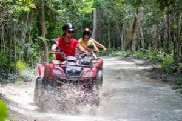
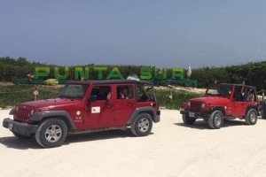
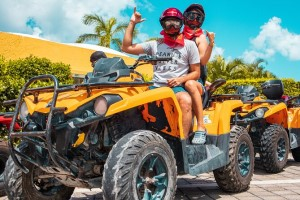
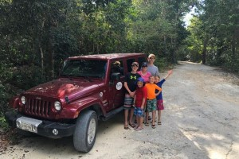

Scoots
Adventure Is Waiting
We offer vehicles that will truly help you get the most out of your stay in Cozumel. There are so many sights to see and things to do! There's an activity for every agenda and presonality. Which one will you choose?
ATV Mud Kicking - viator.com
Get off road in the Cozumel jungles with this all-terrain vehicle tour. Follow your guide through the jungle to the Jade cenote, where you can take a dip and cool off. Wind up at a local beach club for some lounge time and a sailing excursion with snorkeling, lunch, and an open bar. This tour allows you to experience multiple water sports in a single day and has everything arranged for you.
Private Jeep Excursion - viator.com
Discover the jungle and beaches of Cozumel with just your family and friends on this private self-operated Jeep tour. Follow your guide from a separate vehicle and drive into a national park to learn about the local geology and Maya history. Continue to white-sand beaches for snorkeling and enjoy a delicious lunch. These are just some of the activities and sites available. Leave the routine tours behind and design your own itinerary to include horseback riding, shopping, more sightseeing and whatever else suits your interests.
ATV Adventure to Jade Cavern - viator.com
Don’t let time restraints prevent you from having an adventure. Ride through the jungles of Cozumel on this ATV tour, providing just enough time for you to swim in a cenote and ride through a coral cave, all while learning about Maya culture.
Mayan Jungle | Jade Caven Jeep Tour - viator.com
Feel the breeze as you zip around Cozumel aboard a Jeep on this 5-hour tour. After receiving instructions from an informative guide, drive a jeep to Jade Cavern and other top island attractions. Follow this with snorkeling in beautiful clear waters and a satisfying lunch. Wrap up the day with a tour of an esteemed tequila factory, complete with tastings. Choose from several departure times to suit your schedule.
Cozumel Buggy Tour - viator.com
Ride along with your guide on a fun Cozumel excursion, includes manual transmission buggy, beach stop, bilingual guide, full snorkel gear and mexican lunch. Enjoy a fun ride around the island. Relax at the beach while you savour a delicious fish ceviche at San Martin beach club, then continue on the scenic coastal road towards the snorkel site located within the arrecifes de Cozumel national park. Then visit a mexican restaurant for fajitas choose between chicken, beef or fish fajistas served with guacamole and salsas. This activity is perfect for novice to advanced participants